On sait déjà parler au GPIO de la Nucleo-L476RG : allumer la LED
LD2 (PA5) et lire le bouton B1
(PC13), avec HAL_GPIO_ReadPin et
HAL_Delay.
Jusqu’ici on demandait au bouton s’il était appuyé. C’est du
polling (on interroge le matériel en boucle). Le
problème, c’est celui d’une tâche longue et bloquante
(acquisition de capteurs, écriture sur la carte SD, etc.) : tant qu’elle
tourne, on ne lit pas le bouton, et l’appui passe inaperçu. Dans la
démo, un HAL_Delay(3000) en tient lieu.
Une interruption (interrupt en anglais) inverse le rapport : c’est le matériel qui vient prévenir le CPU, même au milieu d’autre chose.
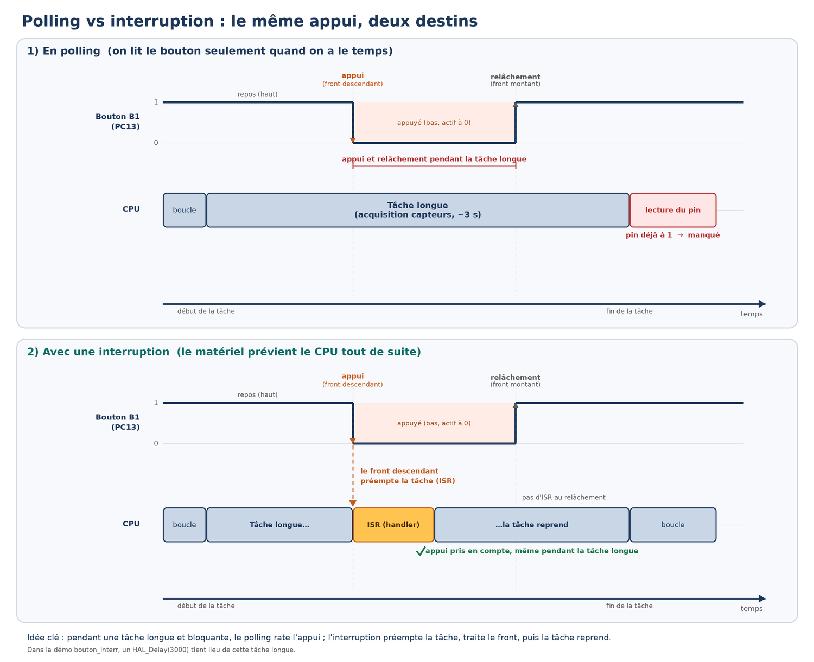
L’idée, c’est une tâche longue et bloquante —
typiquement une acquisition de capteurs qui dure quelques secondes. Dans
le projet bouton_interr, un HAL_Delay(3000) en
tient lieu, puis on bascule la LED. Sans interruption, on lit le bouton
après cette tâche. Si on a appuyé puis relâché pendant ce
temps, c’est trop tard.
while (1) {
HAL_Delay(3000); // simulation d'une tache longe, l'appui du bouton est rarement détecté
HAL_GPIO_TogglePin(LD2_GPIO_Port, LD2_Pin);
#ifndef MODE_INTERRUPTION
GPIO_PinState etat_bouton = HAL_GPIO_ReadPin(B1_GPIO_Port, B1_Pin);
if (etat_bouton == GPIO_PIN_RESET) // si le bouton est appuyé
printf("Le bouton est appuyé %lu fois\n", compteur++);
#endif
}[!NOTE] Dans ce code, un appui correspond à
GPIO_PIN_RESET(le pin passe à 0). C’est pour ça que l’interruption sera configurée sur un front descendant (falling edge).
Avec l’interruption, le même appui préempte la tâche longue : le handler (la routine d’interruption, ISR : Interrupt Service Routine) s’exécute tout de suite, puis la tâche reprend exactement où elle en était.
#include <stdio.h>
#include "board.h"
#include "stm32l4xx_hal.h"
#include "pins.h"
#define MODE_INTERRUPTION
uint32_t compteur = 0;
int main(void) {
board_init();
printf("Hello crazy world!\n");
while(1) {
HAL_Delay(3000); // simulation d'une tache longe, l'appui du bouton est rarement détecté
HAL_GPIO_TogglePin(LD2_GPIO_Port, LD2_Pin);
#ifndef MODE_INTERRUPTION
GPIO_PinState etat_bouton = HAL_GPIO_ReadPin(B1_GPIO_Port, B1_Pin);
if(etat_bouton == GPIO_PIN_RESET) // si le bouton est appuyé
printf("Le bouton est appuyé %lu fois\n", compteur++);
#endif
}
}
void EXTI15_10_IRQHandler(void)
{
HAL_GPIO_EXTI_IRQHandler(B1_Pin);
}
// Avec les interruptions on arrive à réagir face à des évenements asynchrones
#ifdef MODE_INTERRUPTION
void HAL_GPIO_EXTI_Callback(uint16_t GPIO_Pin) {
if (GPIO_Pin == B1_Pin)
printf("Le bouton est appuyé %u fois\n", compteur++);
}
#endifUn appui sur PC13 ne saute pas tout seul dans notre
fonction C. Il traverse quatre étages :
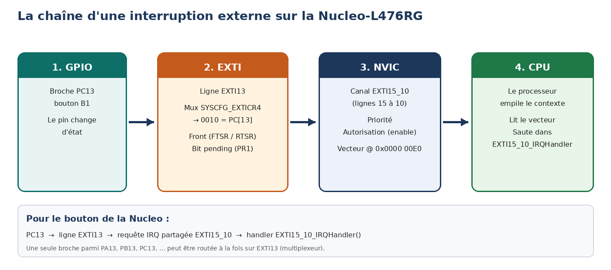
PC13 change
d’état.EXTI13, on choisit le
front, et un bit pending (en attente) est levé.[!IMPORTANT] Dans le prosit interruptions, on te demande d’identifier le rôle du GPIO, du contrôleur EXTI et du NVIC. Cette chaîne est le décor : à toi de la reformuler avec tes mots, en la reliant au problème de la tâche longue et de l’appui sur le bouton. On ne rédige pas le livrable ici.
Les GPIOs du STM32L476 sont branchés sur 16 lignes
configurables, EXTI0 à EXTI15 (une
ligne par numéro de broche, pas par port).
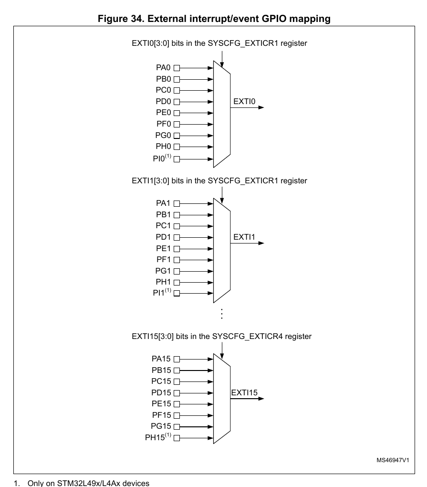
Source : RM0351 Rev 11, p. 402, Figure 34.
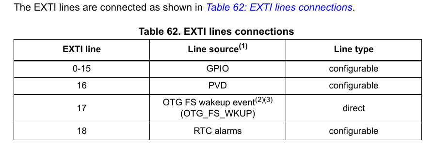
Source : RM0351 Rev 11, p. 402, Table 62 (extrait : lignes 0–18).
Le détail important : PA13, PB13,
PC13, PD13, … arrivent toutes
sur la même ligne EXTI13. Un multiplexeur
(mux) choisit quelle broche est écoutée. Ce choix se programme
dans les registres SYSCFG_EXTICRx.
Pour EXTI13, c’est le champ EXTI13[3:0] de
SYSCFG_EXTICR4 (bits 7 à 4). Pour brancher
PC13, on écrit 0010 :
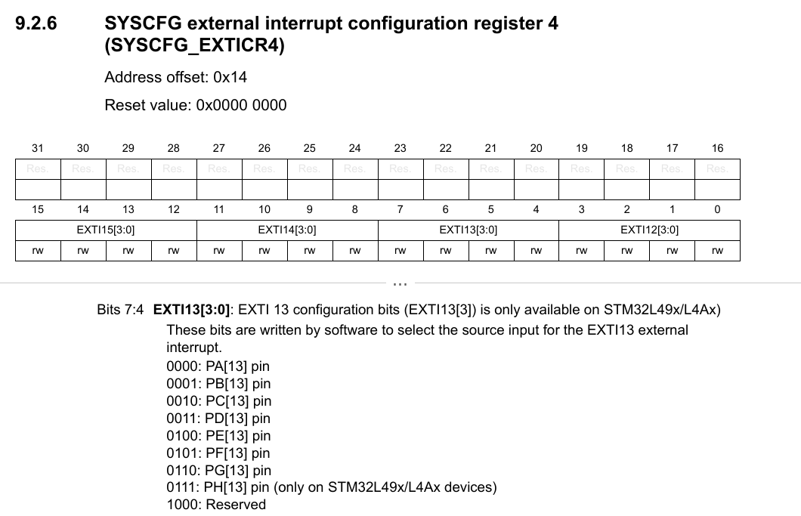
Source : RM0351 Rev 11, p. 323, § 9.2.6 (SYSCFG_EXTICR4). L’extrait saute les champs EXTI15 et EXTI14 pour aller directement à EXTI13.
[!NOTE] Une seule broche à la fois sur
EXTI13. Si on routePC13,PA13n’arrivera plus jusqu’à cette ligne.
Le schéma bloc de l’EXTI (lignes configurables) montre les registres qu’on va manipuler, souvent sans le voir : HAL s’en charge, mais ça reste le matériel en dessous.
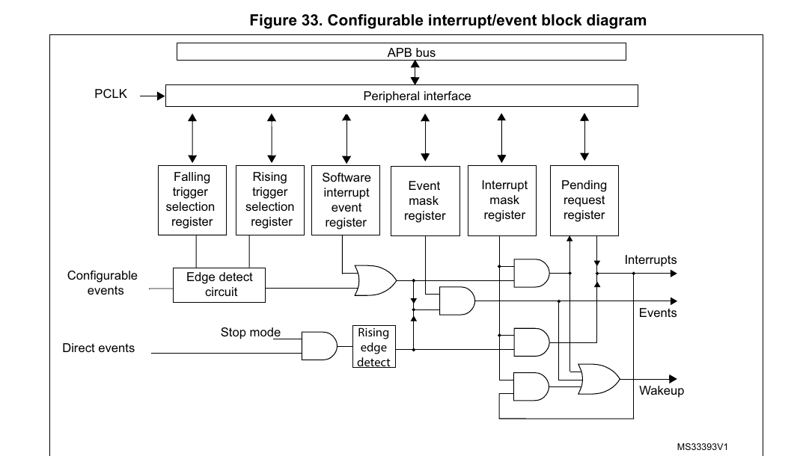
Source : RM0351 Rev 11, p. 400, Figure 33, § 14.3.1.
Pour qu’un front sur EXTI13 devienne une interruption,
le manuel donne trois étapes (§ 14.3.4) :
EXTI_IMR (interrupt mask :
1 = la requête n’est pas masquée) ;EXTI_RTSR (rising) et/ou
EXTI_FTSR (falling) ;Dans la démo, on veut un front descendant. C’est le
bit FT13 de EXTI_FTSR1 :
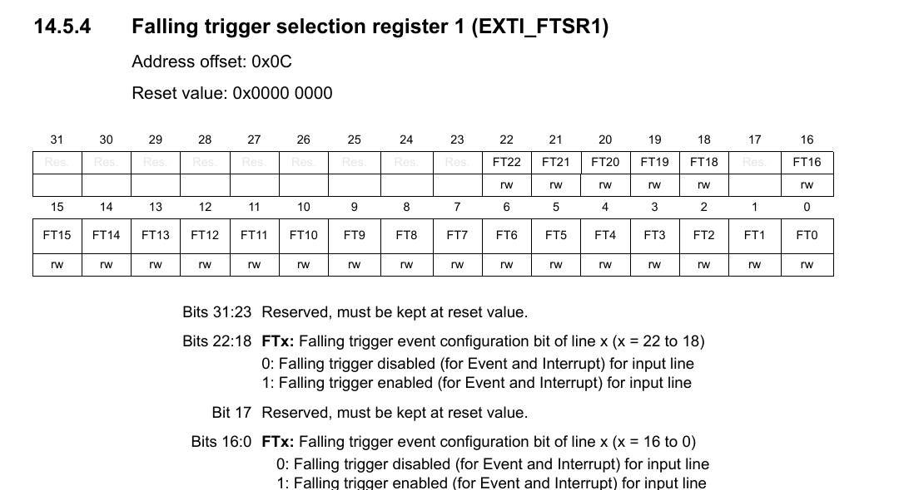
Source : RM0351 Rev 11, p. 405, § 14.5.4 (EXTI_FTSR1).
Quand le front arrive, le bit pending
PIF13 passe à 1 dans EXTI_PR1.
C’est ce drapeau matériel qui dit « un événement s’est produit sur cette
ligne ».
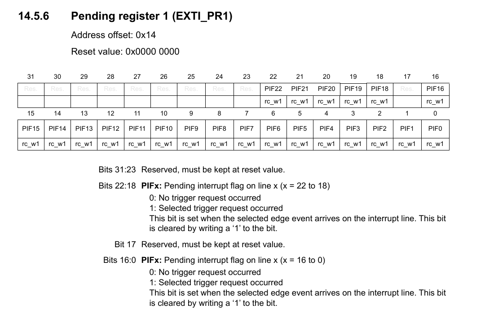
Source : RM0351 Rev 11, p. 407, § 14.5.6 (EXTI_PR1).
[!IMPORTANT] Le bit pending s’efface en y écrivant
1(rc_w1: read/clear by writing 1). Si on l’oublie, le NVIC revoit tout de suite la même requête, et le handler tourne en boucle.
[!NOTE] On peut autoriser les deux fronts sur la même ligne. Dans ce cas, une montée et une descente déclenchent chacune une requête (RM0351, p. 405).
Les lignes EXTI10 à EXTI15 ne sont pas
chacune un handler séparé : elles partagent un seul
vecteur, EXTI15_10. Dans la table du STM32L476, c’est la
position 40, à l’adresse 0x0000 00E0 :
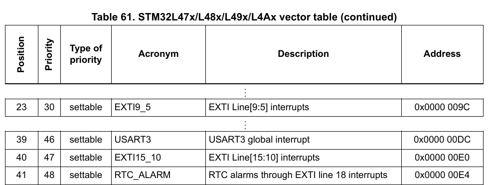
Source : RM0351 Rev 11, p. 396, Table 61 (extrait : on garde
aussi EXTI9_5, l’autre vecteur groupé, pour
comparaison).
Cette « position 40 » est le numéro d’IRQ
(EXTI15_10_IRQn). Le manuel du Cortex-M4 montre comment la
table est rangée : d’abord la valeur initiale de la pile, puis Reset,
NMI, etc., puis les IRQ à partir du numéro 0 (offset
0x00000040). Notre IRQ 40 se trouve donc bien à
0x40 + 40×4 = 0x000000E0.
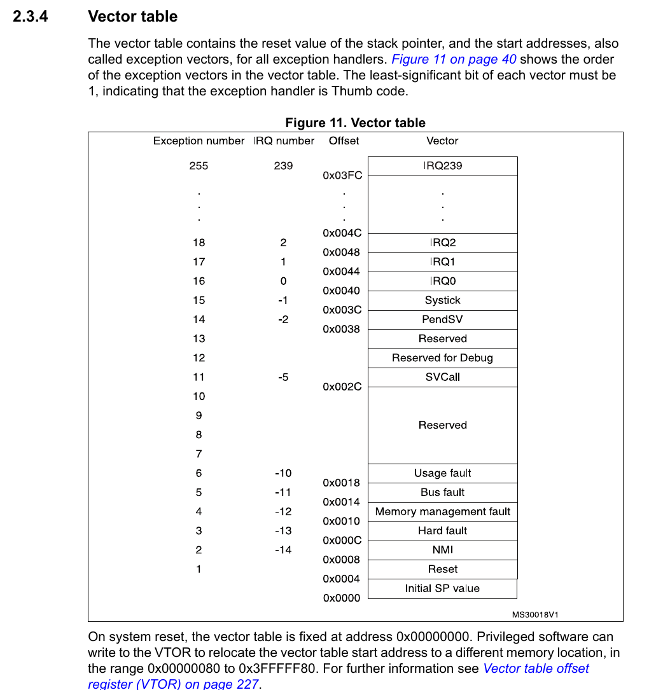
Source : PM0214 Rev 10, p. 40, Figure 11 et § 2.3.4.
Le NVIC ne se contente pas d’un on/off. Chaque IRQ a une
priorité. Attention au sens : plus la valeur
est petite, plus la priorité est haute. 0 est donc
la priorité la plus urgente parmi les interruptions configurables
(PM0214, § 2.3.5 et § 4.3).
Les champs de priorité tiennent sur 8 bits dans le registre, mais le
processeur n’utilise que les bits [7:4] : ça fait 16
niveaux, de 0 à 15.
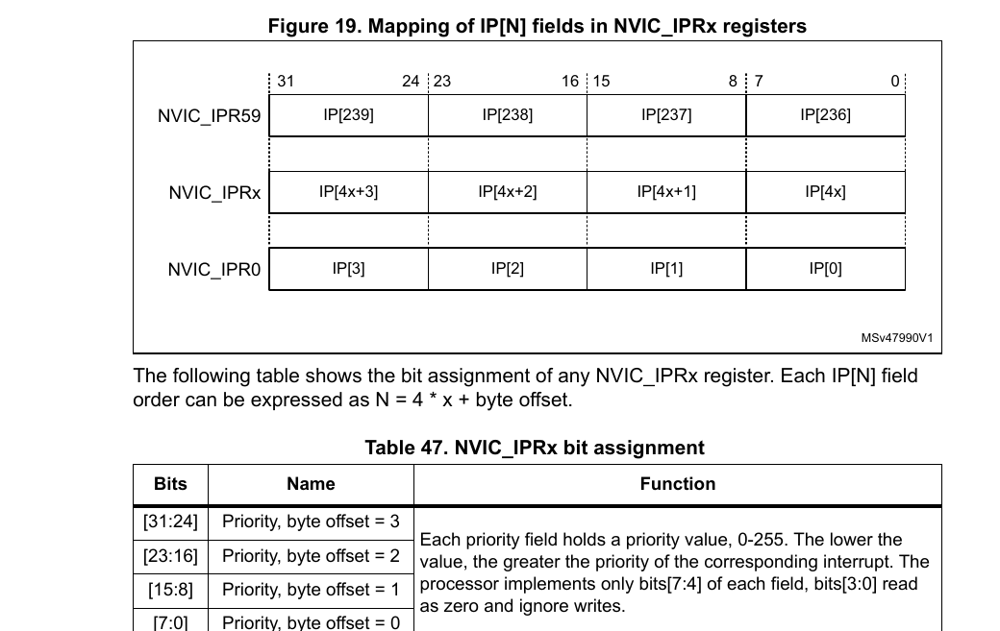
Source : PM0214 Rev 10, p. 215, Figure 19 et Table 47.
Quand le NVIC accepte la requête, le CPU empile
automatiquement quelques registres (R0–R3,
R12, LR, PC, xPSR —
plus les registres flottants si besoin), et en
parallèle il lit l’adresse du handler dans la table (le
vector fetch). Au retour, il dépile, et le programme interrompu
reprend.
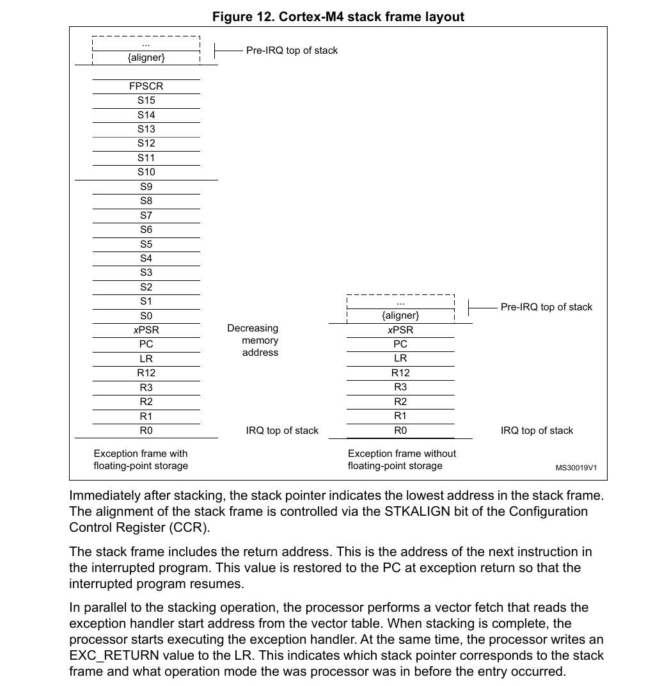
Source : PM0214 Rev 10, p. 43, Figure 12 et le texte qui suit (stacking + vector fetch).
En pratique, on ne tape pas dans NVIC_ISERx à la main.
HAL s’appuie sur CMSIS :
HAL_NVIC_SetPriority(EXTI15_10_IRQn, 0, 0); // priorité 0, sous-priorité 0
HAL_NVIC_EnableIRQ(EXTI15_10_IRQn);HAL_NVIC_EnableIRQ appelle directement
NVIC_EnableIRQ (CMSIS).
HAL_NVIC_SetPriority(IRQn, preempt, sub) fait un peu plus :
il lit le groupement de priorités en cours
(NVIC_GetPriorityGrouping), encode la préemption et la
sous-priorité avec NVIC_EncodePriority, puis passe le
résultat à NVIC_SetPriority.
[!NOTE]
HAL_InitchoisitNVIC_PRIORITYGROUP_4: les 4 bits de priorité vont tous à la préemption, la sous-priorité ne compte plus. Dans l’appel(EXTI15_10_IRQn, 0, 0), seul le premier0(préemption, de 0 à 15) a un effet ; le second est effectivement ignoré.
C’est exactement ce que fait MX_GPIO_Init dans
bouton_interr.
Voici le chemin complet, tel qu’il est câblé dans le projet
bouton_interr.
B1 est PC13. On le met en entrée
interruptible, front descendant, puis on arme le NVIC :
/* Configure GPIO pin : B1_Pin */
GPIO_InitStruct.Pin = B1_Pin;
GPIO_InitStruct.Mode = GPIO_MODE_IT_FALLING;
GPIO_InitStruct.Pull = GPIO_NOPULL;
HAL_GPIO_Init(B1_GPIO_Port, &GPIO_InitStruct);
/* EXTI interrupt init */
HAL_NVIC_SetPriority(EXTI15_10_IRQn, 0, 0);
HAL_NVIC_EnableIRQ(EXTI15_10_IRQn);GPIO_MODE_IT_FALLING, c’est HAL qui, derrière, programme
le mux SYSCFG_EXTICR4, le masque EXTI_IMR, et
le front EXTI_FTSR. Les deux appels HAL_NVIC_*
font l’étape 3 du manuel.
Quand PIF13 se lève et que le NVIC laisse passer, le CPU
saute à EXTI15_10_IRQHandler. Dans la démo, ce handler se
contente d’appeler HAL, qui va regarder le bit pending de
B1, l’effacer, puis appeler un callback
(une fonction que nous remplissons) :
void EXTI15_10_IRQHandler(void)
{
HAL_GPIO_EXTI_IRQHandler(B1_Pin);
}
void HAL_GPIO_EXTI_Callback(uint16_t GPIO_Pin)
{
if (GPIO_Pin == B1_Pin)
printf("Le bouton est appuyé %u fois\n", compteur++);
}flowchart TD
A[Front descendant sur PC13] --> B[EXTI13 : PIF13 = 1]
B --> C[NVIC : canal EXTI15_10]
C --> D[EXTI15_10_IRQHandler]
D --> E["HAL_GPIO_EXTI_IRQHandler(B1_Pin)"]
E --> F[efface PIF13]
F --> G[HAL_GPIO_EXTI_Callback][!IMPORTANT] Le
printfdans le callback de la démo est pratique pour voir que ça marche, mais ce n’est pas une bonne pratique :printfpeut être lent, et il n’est en général pas conçu pour être appelé depuis une interruption. Ce n’est pas une règle du matériel, juste une habitude à prendre. Mieux vaut poser un drapeauvolatileet traiter l’événement dans la boucle principale.L’exemple officiel ST (GPIO_EXTI sur Nucleo-L476RG) prévient aussi qu’un
HAL_Delaydans une ISR bloque le système, sauf siSysTicka une priorité plus haute que l’interruption en cours :HAL_Delayattend que le tick avance, et si on est déjà dans une ISR plus prioritaire que SysTick, le tick ne passe plus.
volatile uint8_t bouton_appuye = 0;
void HAL_GPIO_EXTI_Callback(uint16_t GPIO_Pin)
{
if (GPIO_Pin == B1_Pin)
bouton_appuye = 1;
}
/* dans le while(1), à côté de la tâche longue : */
if (bouton_appuye) {
bouton_appuye = 0;
/* traiter l'appui ici, pas dans l'ISR */
}On met volatile parce que le flag est écrit dans
l’interruption et lu dans main. Sans ça, le compilateur
pourrait croire que bouton_appuye ne change jamais dans la
boucle, et « optimiser » la lecture.
[!NOTE] Rebonds (debounce). Un bouton mécanique ne passe pas proprement de 1 à 0 : il peut produire plusieurs fronts pour un seul appui, donc plusieurs interruptions. Une fenêtre typique — ce n’est pas une spécification ST — est de quelques millisecondes. Une ISR courte qui se contente de lever un flag, puis un traitement dans
main, est déjà un bon cadre pour s’en occuper (par exemple en ignorant un nouvel appui trop rapproché). On ne pousse pas plus loin ici : mesurer la durée d’un appui, c’est un autre problème, à toi de le poser proprement dans le cadre du prosit.
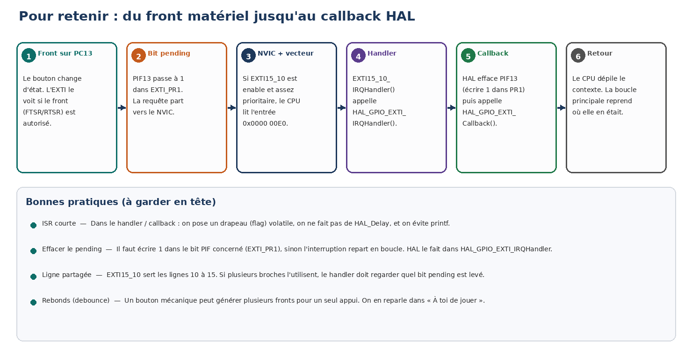
En une phrase : GPIO (le pin) → EXTI (ligne, front, bit pending) → NVIC (autorisation, priorité, vecteur) → CPU (handler, puis callback HAL) → on efface le pending et on rend la main.
Pas de corrigé ici, juste de quoi pratiquer sur la Nucleo, sans faire le livrable du prosit à ta place.
printf. Dans
HAL_GPIO_EXTI_Callback, à la place de l’affichage, bascule
LD2 (PA5) avec
HAL_GPIO_TogglePin. Tu devrais voir la LED changer
pendant le HAL_Delay(3000), pas seulement à la
fin.volatile. Remplace le
travail fait dans le callback par le schéma bouton_appuye
ci-dessus, et fais le TogglePin (ou le printf)
dans le while(1). Vérifie que les appuis pendant le délai
sont toujours vus, et que la boucle principale reste le seul endroit «
bavard ».EXTI15_10 sert les lignes 10 à 15. Si demain une
autre broche de ce groupe (par exemple une PAx
avec x entre 10 et 15) devait aussi interrompre : que
faut-il ajouter dans EXTI15_10_IRQHandler ? Que se
passe-t-il si on n’efface que le pending de B1 ?Les manuels utilisés pour cette séance sont déjà dans
cours/adriana/docs/ :
Code HAL et exemple ST :